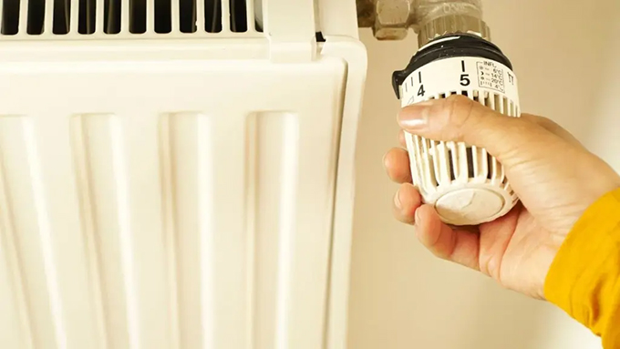

Ideer til en grønnere hverdag
Når vi taler om simple vaner, mener vi at lave små ændringer i de hverdagsting, vi allerede gør, så det at vælge grønt og bæredygtigt bliver et naturligt valg i hverdagens travlhed.
Reducer madspild:
Gør det nemmere at bruge det, du har
Opret en "bedst før"-sektion:
Læg rester, åbnede glas og grøntsager, der er ved at blive dårlige, på en bestemt hylde i køleskabet, så de altid er i syne.
Planlæg dit hjemmelager:
Før du skriver din indkøbsliste, så tag et kig på dit køleskab og din fryser og udpeg én dag om ugen som "tøm køleskabsdag".
Grønne vaner:
Foretag små ændringer i din regelmæssige rutine.De bedste vaner er dem, der kræver mindst energi og indsats, når du først er startet.
Sænk din hjemmetemperatur en smule:
At sænke din hjemmetemperatur med bare 1 grad kan reducere energiforbruget betydeligt uden at gøre en stor forskel i din daglige komfort.

Vask ved en lavere temperatur og lufttør:
Det meste hverdagstøj er perfekt rent ved 30°C, og tørring af tøj sparer naturligt både strøm og tøjets levetid.
Hurtigt overblik: Hvor kan du starte i dag?
Vælg blot en eller to små ting, der passer ind i din nuværende rytme; det er meget mere bæredygtigt end at ændre alt på én gang.